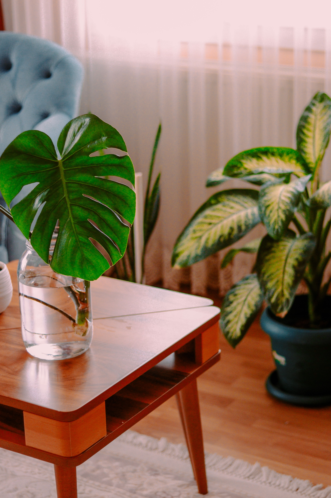
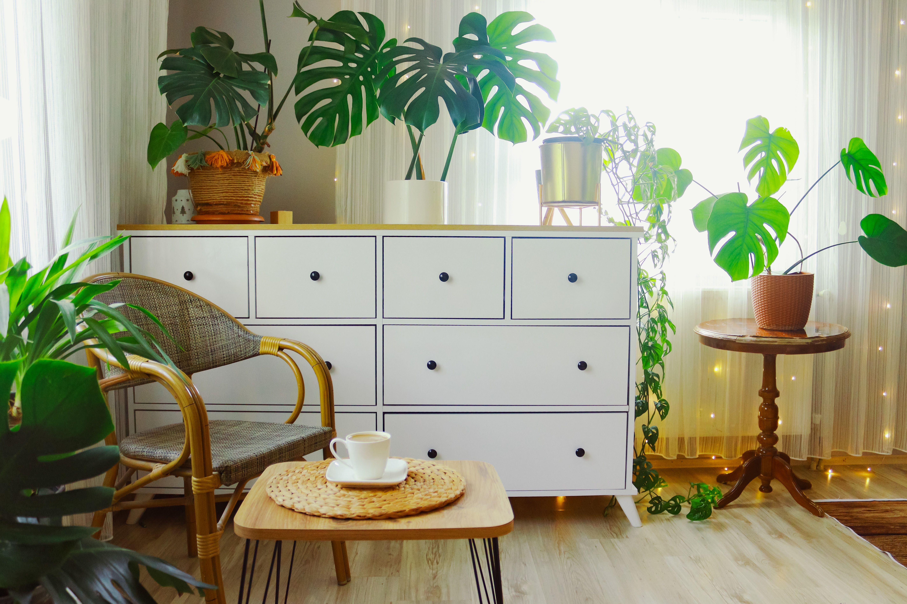
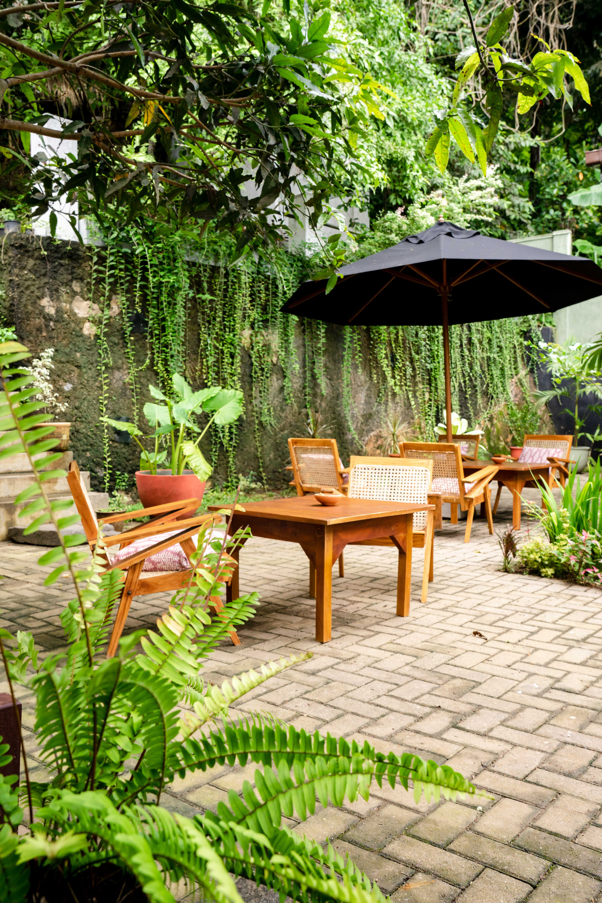

In This Article
- Introduction
- Choose the Right Composting Method
- Understand Green and Brown Materials
- What You Can Add
- What to Avoid
- Build the Pile in Balanced Layers
- Manage Moisture
- Provide Enough Air
- Control Odors
- Understand Temperature
- Speed Up the Process Safely
- Know When Compost Is Ready
- Use Finished Compost in the Garden
- Composting in Small Spaces
- Common Mistakes to Avoid
- Frequently Asked Questions
- Keep a Simple Compost Log
- Keep a Simple Compost Log
- Keep a Simple Compost Log
- Keep a Simple Compost Log
- Keep a Simple Compost Log
- Keep a Simple Compost Log
- Keep a Simple Compost Log
- Keep a Simple Compost Log
- Keep a Simple Compost Log
- Keep a Simple Compost Log
- Keep a Simple Compost Log
- Keep a Simple Compost Log
- Conclusion
Introduction
Home composting transforms suitable kitchen and garden scraps into a dark, crumbly material that can improve soil structure and return organic matter to the garden. The process works best when carbon-rich and nitrogen-rich materials are balanced with enough moisture and oxygen.
Composting does not need to be complicated. A simple bin, pile, or small-space system can work when the materials are appropriate and the conditions are monitored regularly.
Choose the Right Composting Method
Outdoor piles and bins are practical when you have a garden and a steady supply of leaves, grass clippings, and kitchen scraps. Enclosed bins can look tidier and may help control animals.
Tumbling composters are convenient for smaller quantities and make turning easier, although their capacity is limited. Worm composting can work indoors or on balconies when managed correctly and when local temperatures are suitable for the worms.
Choose a method based on available space, volume of organic waste, climate, and the amount of maintenance you can provide.
Understand Green and Brown Materials
Compost needs a mixture of nitrogen-rich materials, often called greens, and carbon-rich materials, often called browns.
Greens include many fresh plant materials, vegetable scraps, coffee grounds, and fresh grass clippings. Browns include dry leaves, shredded untreated cardboard, paper, straw, and small woody material.
A balanced mix helps microorganisms work efficiently. Too many wet greens can create odor and compaction, while too many dry browns can slow decomposition.
What You Can Add
Fruit and vegetable scraps, coffee grounds, tea leaves, crushed eggshells, dry leaves, untreated plant trimmings, and small quantities of shredded cardboard are commonly suitable for home composting.
Cut large materials into smaller pieces to increase surface area and speed decomposition. This is especially helpful for thick stems, corn cobs, cardboard, and woody material.
Mix new kitchen scraps into the pile rather than leaving them exposed on top where they may attract insects or animals.
What to Avoid
Meat, fish, dairy products, fats, oils, and heavily cooked foods can create odor and attract animals in simple home compost systems. Pet waste from cats and dogs should also be kept out of compost intended for gardens.
Avoid diseased plant material if your home compost does not reliably reach temperatures high enough to destroy pathogens. Also avoid mature invasive weeds or plants with persistent seeds when there is a risk they will survive.

Do not add treated wood, glossy coated paper, plastics, metal, glass, or other non-compostable materials.
Build the Pile in Balanced Layers
You do not need perfect alternating layers, but combining greens and browns throughout the pile helps prevent wet pockets and improves airflow.
Start with a loose base of coarse brown material if the pile is directly on the ground. Add mixed greens and browns in manageable quantities.
When adding a bucket of wet kitchen scraps, cover it with a layer of dry leaves, shredded cardboard, or another brown material. This simple habit helps control moisture and odor.
Manage Moisture
Compost microorganisms need moisture, but a waterlogged pile loses air and can become anaerobic. The material should feel similar to a wrung-out sponge: moist but not dripping.
If the pile is too dry, add water gradually while turning. If it is too wet, mix in dry brown material and improve airflow.
Protect the pile from excessive rain when necessary, especially in climates with long wet seasons.
Provide Enough Air
Oxygen supports aerobic decomposition. Turning the pile with a fork or compost aerator helps redistribute moisture and create air spaces.
How often you turn depends on the method and how quickly you want compost. A passive pile can decompose with less turning but takes longer.
Avoid compacting grass clippings or wet kitchen scraps into dense layers because they can exclude air.

Control Odors
A healthy compost pile should smell earthy rather than strongly unpleasant. Bad odors usually indicate too much moisture, too many greens, or insufficient air.
Turn the pile, add dry browns, and make sure drainage is adequate. Bury fresh food scraps inside the pile instead of leaving them exposed.
If odor persists, review what was added and remove unsuitable materials.
Understand Temperature
Active compost piles can become warm as microorganisms break down organic matter. Larger, well-balanced piles tend to heat more effectively than very small ones.
High temperatures can speed decomposition and help reduce some weed seeds and pathogens, but home piles do not always heat evenly enough to guarantee this.
For this reason, avoid relying on home compost to safely process diseased plants or persistent weed seeds unless you know your system reaches and maintains appropriate temperatures.
Speed Up the Process Safely
Smaller particle size, balanced materials, proper moisture, and regular aeration are the main ways to accelerate composting.
Do not add excessive fertilizer, chemicals, or unverified activators. A good mix of greens and browns already contains the nutrients microorganisms need.
Increasing pile size can help retain heat, but it should remain manageable enough to turn and monitor.
Know When Compost Is Ready
Finished compost is usually dark, crumbly, and earthy smelling. Most original materials should no longer be recognizable, although small woody pieces may remain.

The pile should have cooled and stopped shrinking rapidly. If large amounts of fresh material are still visible, allow more time.
Sifting is optional. Coarse unfinished pieces can be returned to the next batch.
Use Finished Compost in the Garden
Compost can be mixed into garden beds, used as a surface amendment, or added in modest amounts to potting mixes when appropriate.
It is not a complete substitute for every soil or fertilizer need. Different plants have different nutrient and drainage requirements.
Apply compost according to the needs of the soil and plants rather than adding thick layers everywhere automatically.
Composting in Small Spaces
Balconies, patios, and apartments can still support composting when the system is scaled to the available space.
Worm bins, compact tumblers, and enclosed composters can reduce odor and mess when they are managed carefully.
Choose a location protected from extreme heat or cold and make sure liquids cannot leak onto floors or neighboring properties.
Common Mistakes to Avoid
Do not add too many food scraps without enough dry brown material. This is one of the most common causes of odor.
Avoid keeping the pile permanently soaked or completely dry. Both conditions slow healthy decomposition.
Do not add inappropriate materials simply because they are biodegradable in theory. Home composting systems have practical limits.
Finally, be patient. Composting is a biological process, and the time required varies with climate, materials, pile size, and management.
Frequently Asked Questions
How long does home compost take?
It can take a few months to a year depending on the method, climate, material size, moisture, and how often the pile is turned.
Why does my compost smell bad?
The pile may be too wet, too compacted, or contain too many nitrogen-rich materials. Turn it and add dry brown material.
Can I compost citrus peels?
Yes, in moderate amounts. Cutting them into smaller pieces can help them break down faster.
Do I need to buy a compost activator?
No. A balanced mix of green and brown materials, moisture, and oxygen is usually enough.
Keep a Simple Compost Log
When you are learning, note when the pile was started, when it was turned, and whether it became too wet or dry. This helps you understand how your climate and materials affect decomposition.
You do not need detailed measurements. A few observations about odor, moisture, temperature, and texture can make future batches easier to manage.
Keep a Simple Compost Log
When you are learning, note when the pile was started, when it was turned, and whether it became too wet or dry. This helps you understand how your climate and materials affect decomposition.
You do not need detailed measurements. A few observations about odor, moisture, temperature, and texture can make future batches easier to manage.
Keep a Simple Compost Log
When you are learning, note when the pile was started, when it was turned, and whether it became too wet or dry. This helps you understand how your climate and materials affect decomposition.
You do not need detailed measurements. A few observations about odor, moisture, temperature, and texture can make future batches easier to manage.
Keep a Simple Compost Log
When you are learning, note when the pile was started, when it was turned, and whether it became too wet or dry. This helps you understand how your climate and materials affect decomposition.
You do not need detailed measurements. A few observations about odor, moisture, temperature, and texture can make future batches easier to manage.
Keep a Simple Compost Log
When you are learning, note when the pile was started, when it was turned, and whether it became too wet or dry. This helps you understand how your climate and materials affect decomposition.
You do not need detailed measurements. A few observations about odor, moisture, temperature, and texture can make future batches easier to manage.
Keep a Simple Compost Log
When you are learning, note when the pile was started, when it was turned, and whether it became too wet or dry. This helps you understand how your climate and materials affect decomposition.
You do not need detailed measurements. A few observations about odor, moisture, temperature, and texture can make future batches easier to manage.
Keep a Simple Compost Log
When you are learning, note when the pile was started, when it was turned, and whether it became too wet or dry. This helps you understand how your climate and materials affect decomposition.
You do not need detailed measurements. A few observations about odor, moisture, temperature, and texture can make future batches easier to manage.
Keep a Simple Compost Log
When you are learning, note when the pile was started, when it was turned, and whether it became too wet or dry. This helps you understand how your climate and materials affect decomposition.
You do not need detailed measurements. A few observations about odor, moisture, temperature, and texture can make future batches easier to manage.
Keep a Simple Compost Log
When you are learning, note when the pile was started, when it was turned, and whether it became too wet or dry. This helps you understand how your climate and materials affect decomposition.
You do not need detailed measurements. A few observations about odor, moisture, temperature, and texture can make future batches easier to manage.
Keep a Simple Compost Log
When you are learning, note when the pile was started, when it was turned, and whether it became too wet or dry. This helps you understand how your climate and materials affect decomposition.
You do not need detailed measurements. A few observations about odor, moisture, temperature, and texture can make future batches easier to manage.
Keep a Simple Compost Log
When you are learning, note when the pile was started, when it was turned, and whether it became too wet or dry. This helps you understand how your climate and materials affect decomposition.
You do not need detailed measurements. A few observations about odor, moisture, temperature, and texture can make future batches easier to manage.
Keep a Simple Compost Log
When you are learning, note when the pile was started, when it was turned, and whether it became too wet or dry. This helps you understand how your climate and materials affect decomposition.
You do not need detailed measurements. A few observations about odor, moisture, temperature, and texture can make future batches easier to manage.
Conclusion
Home composting is a simple way to recycle suitable kitchen and garden waste into useful organic matter. Success depends on balancing green and brown materials, maintaining moisture, and providing enough air.
Start with a manageable system, monitor odor and moisture, and adjust gradually. With regular attention, composting becomes an easy routine that reduces waste and supports healthier garden soil.